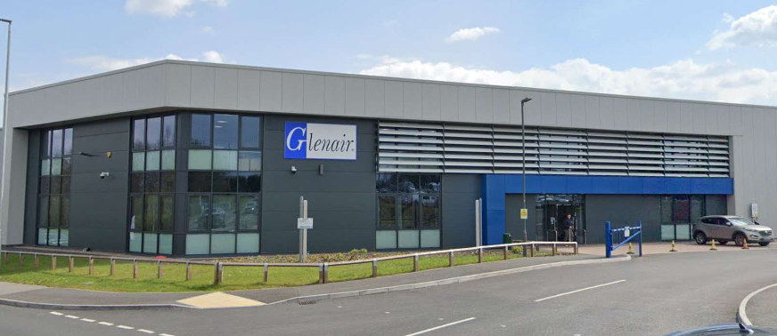

During my two-year tenure as an IT support technician at Glenair UK, my responsibilities encompassed overseeing a diverse user base of over 700 individuals across the globe. Operating within the dynamic context of a manufacturing company, I undertook the intricate task of upkeeping and enhancing our IT infrastructure. This involved addressing faults and erros, extending unwavering assistance to the Glenair team, and ensuring smooth digital operations. This journey has enabled me to cultivate a versatile skill set and gain profound insights. I've refined my technical proficiencies and mastered the art of effective time management and proactive issue resolution. These competencies empower me to confront challenges head-on, fostering an environment of continuous improvement and technological enrichment within the realm of Glenair's operations.

Content for Roles and Responsibilities popup.
Email:
pdraycott@glenair.co.uk
Relation to me:
The European Business Information Systems Manager oversees the IT support team and ensures smooth daily operations.
I was tasked with revitalising old cable inspection machinery operating on the obsolete Windows 7 platform; I embarked on a multifaceted journey to enhance the efficiency and performance of these systems. Recognising the need for a comprehensive upgrade, my primary objective was to initiate a modernisation process that would improve their operational capabilities. By transitioning to a more advanced and agile operating system, coupled with the integration of faster and more responsive hardware, the aim was to increase the functionality of these machines and elevate their cable inspection capabilities. The meticulous planning, systematic execution, and rigorous problem-solving I employed were instrumental in overcoming the challenges posed by this technological evolution. As a result, the cable inspection process significantly enhanced overall efficiency and effectiveness.
One of the central challenges encountered in this endeavour was the dependence of these machines on the Peripheral Component Interconnect (PCI) expansion slot for communication with the computer. However, modern computers have moved beyond this legacy slot, leading to a compatibility dilemma. The constraint further compounded that the PCI expansion slot was exclusively suited for medium and large computer cases. This constraint imposed limitations on selecting computers that could be effectively integrated. I strategically identified a solution to address this obstacle: repurposing computers from the design office, which possessed the required particular part, thereby circumventing the need for additional components. This innovative approach resolved the compatibility issue and streamlined the integration process.
Navigating through the intricacies of this upgrade brought forth another challenge. The enhanced communication capabilities of the newly updated systems created a disparity with the performance of the existing cable inspection machinery. I adjusted the settings within the new Windows 10 operating system to rectify this misalignment. This process was iterative, involving a continuous refinement, experimentation, and recalibration cycle. Through persistent efforts, I developed a refined configuration that optimised the synchronisation between the updated systems and the cable inspection machinery. This achievement underscored the critical role of adaptability and iterative refinement in overcoming complex technical challenges.
A pivotal turning point in this endeavour emerged when I determined that employing only four of the eight available computer parts yielded the most optimal performance outcomes. This decision was based on meticulously evaluating the system's workload distribution and resource utilisation. This optimisation strategy was analogous to managing a team of chefs in a kitchen: even though all eight chefs were available, delegating tasks to only four simultaneously ensured an efficient and balanced workflow. Similarly, with this approach, the computer's components operated in concert, with sufficient resources allocated for seamless and effective task execution.
Furthermore, enhancing memory capacity within the computer system was instrumental in improving its overall performance. While memory augmentation didn't directly accelerate individual components, it was critical in facilitating efficient collaboration among various elements. Memory served as a dynamic workspace, enabling the computer to access and manipulate essential information during operations swiftly. This alleviated the need for continuous data transfers between the workspace and slower storage locations, effectively reducing processing bottlenecks and enhancing overall system responsiveness.
After systematically tackling each challenge, the cable inspection machinery evolved from sluggish systems into agile and high-performing tools on par with new units. This process resembled the intricate assembly of a puzzle, where each piece seamlessly fit together, culminating in an effective and efficient solution. This journey highlighted the formidable potential of problem-solving, adaptability, and innovation in elevating technological capabilities. Moreover, with the imperative to upgrade 13 machines, this approach revitalised individual units and demonstrated a broader strategy for sustainable resource utilisation. By opting for a prudent investment in workstation PCs costing around $2000 each, rather than the significantly higher expense of new cable testing machines exceeding $ 5,000 each, we achieved technical advancement and demonstrated fiscal responsibility and resource optimisation. This practice resonates with environmental sustainability and responsible resource management, reaffirming that success goes beyond technological solutions, encompassing economic viability and ecological mindfulness.
After systematically tackling each challenge, the cable inspection machinery evolved from sluggish systems into agile and high-performing tools on par with new units. This process resembled the intricate assembly of a puzzle, where each piece seamlessly fit together, culminating in an effective and efficient solution. This journey highlighted the formidable potential of problem-solving, adaptability, and innovation in elevating technological capabilities. Moreover, with the imperative to upgrade 13 machines, this approach revitalised individual units and demonstrated a broader strategy for sustainable resource utilisation. By opting for a prudent investment in workstation PCs costing around £2000 each, rather than the significantly higher expense of new cable testing machines exceeding £50,000 each, we achieved technical advancement and demonstrated fiscal responsibility and resource optimisation. This practice resonates with environmental sustainability and responsible resource management, reaffirming that success goes beyond technological solutions, encompassing economic viability and ecological mindfulness.
In 2020, as part of my pursuit of the Cambridge Technical Level 3 Diploma in IT, I embarked on a six-week work experience journey within the IT department. Each week, I dedicated a day to immerse myself in the practical applications of my coursework. This experience offered a tangible outlet to apply the theories I had learned. While in the IT department, I delved into the intricacies of their systems, networks, and backup procedures. Their adept professionals guided me through the operational complexities, providing me with a firsthand understanding of their technological architecture.
During my work as a casual leaflet distributor from August to November 2018, I honed crucial skills that have significantly shaped my professional growth. My role demanded meticulous organization and time management as I efficiently strategized routes to distribute leaflets within deadlines. The experience required efficiency and resourcefulness, ensuring every leaflet reached its designated location promptly. Moreover, the repetitive nature of the job cultivated a sense of resilience, teaching me the importance of staying committed and focused even when faced with monotonous tasks.